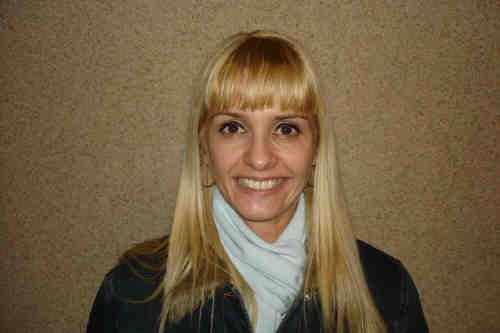
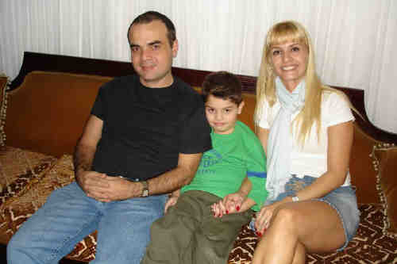
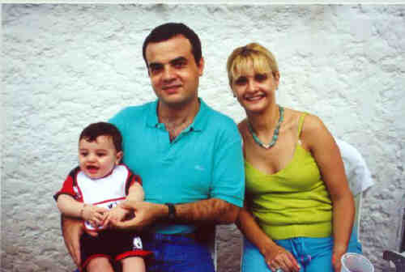

|
|
 Cláudia Aparecida Dos Santos (1968-) |
Cláudia Aparecida Dos Santos
 • fotos: Ibsen - Enrico - Cláudia. 
(Clique na Foto para vê-la no Tamanho Original)")
• fotos: Cláudia - Enrico - Ibsen.  • fotos: Enrico -Ibsen - Cláudia. Cláudia casad[:o::a] Ibsen Thadeo Damiani, filho de Miguel Paulo Damiani e Neuza Colucci, em 7 Out 1993 em Na Igreja Do Convento Do Carmo Em Sp. (Ibsen Thadeo Damiani nasceu em em 18 Jan 1964 em Sp, Sp.) |
 Eventos notáveis em Sua vida foram:
Eventos notáveis em Sua vida foram: